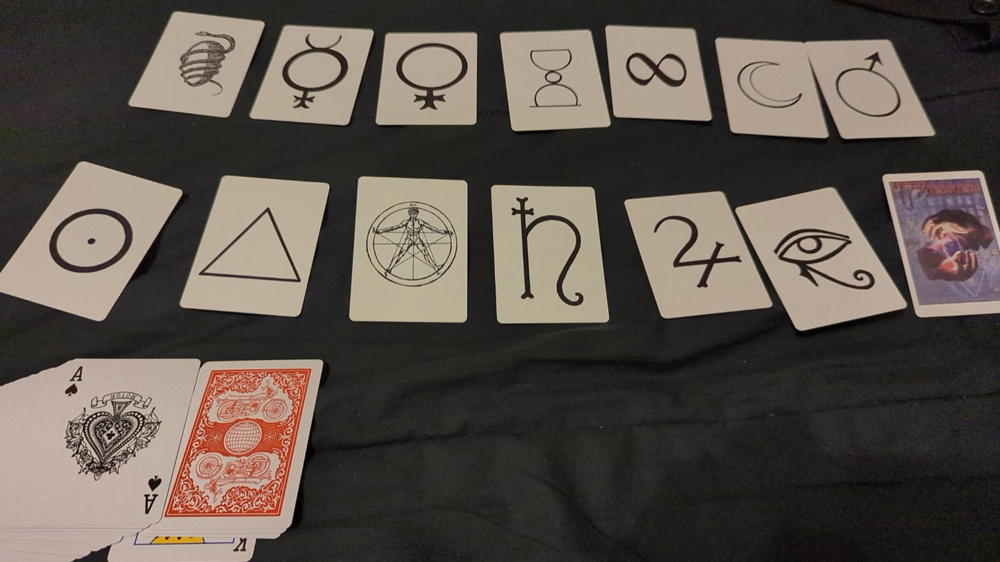
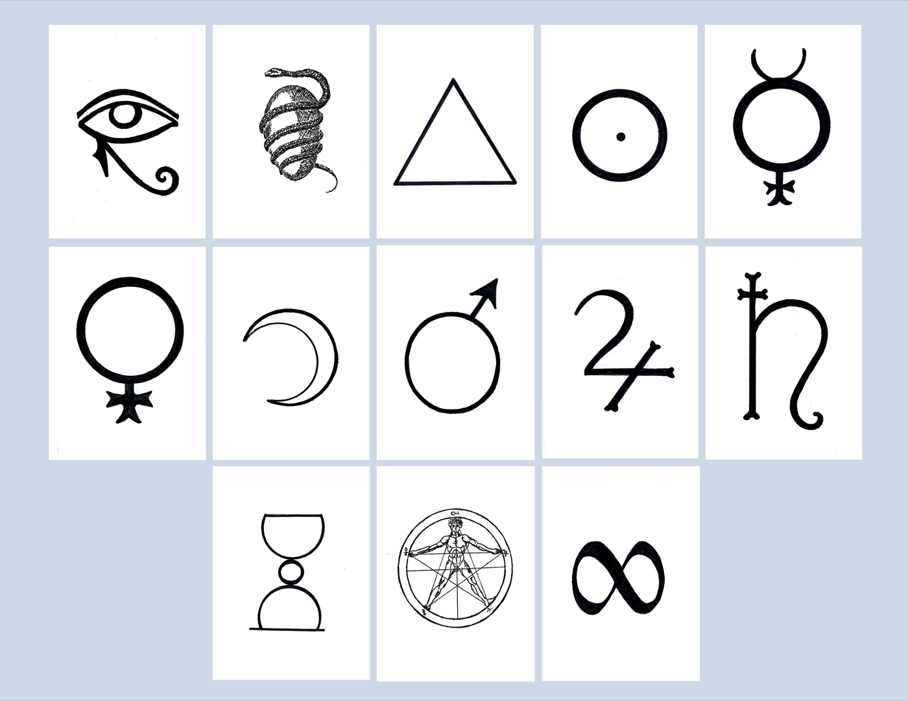
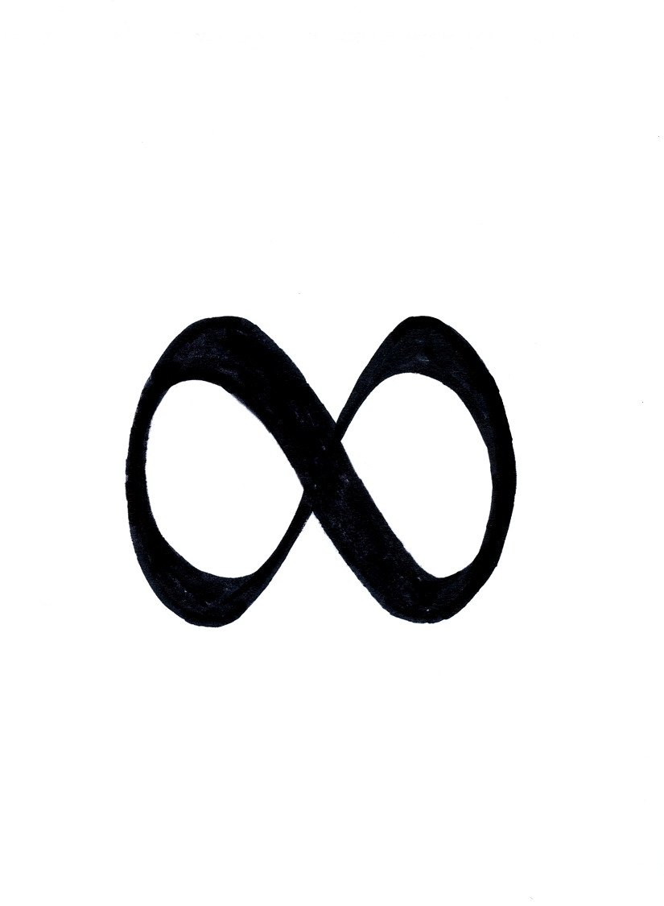
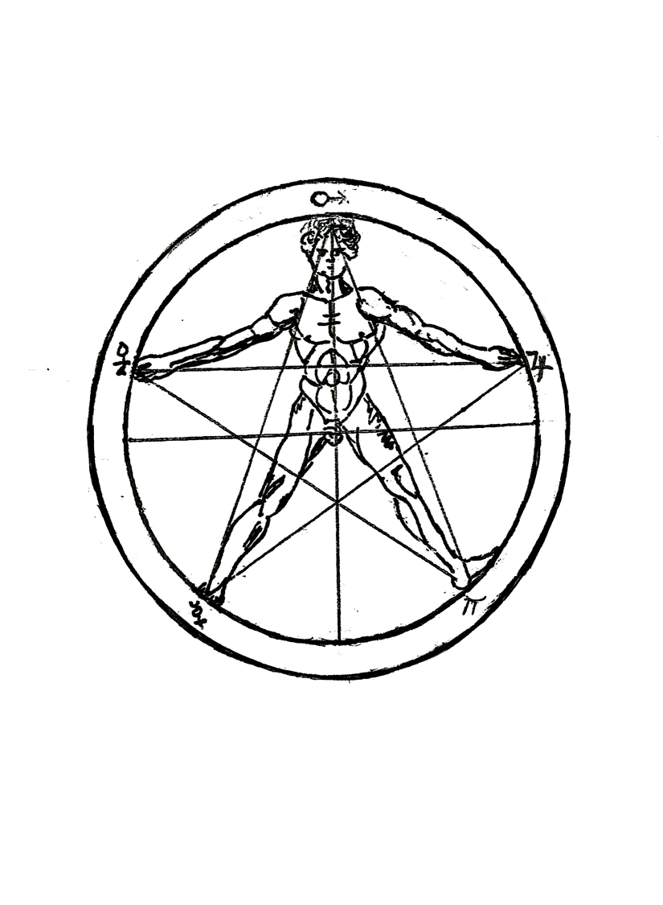
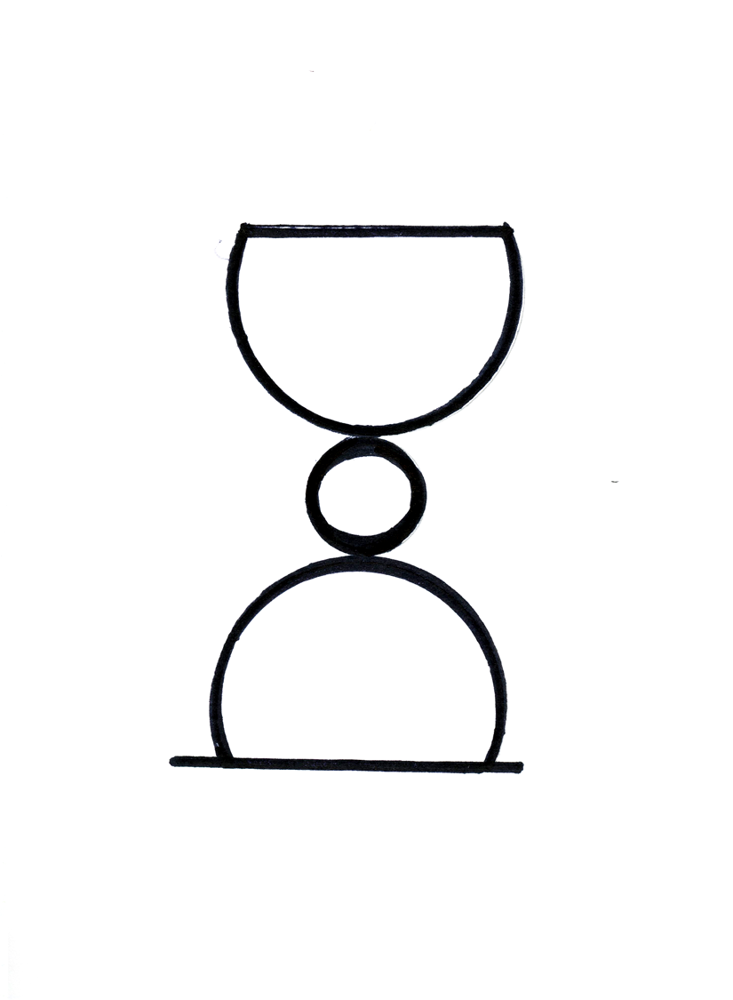
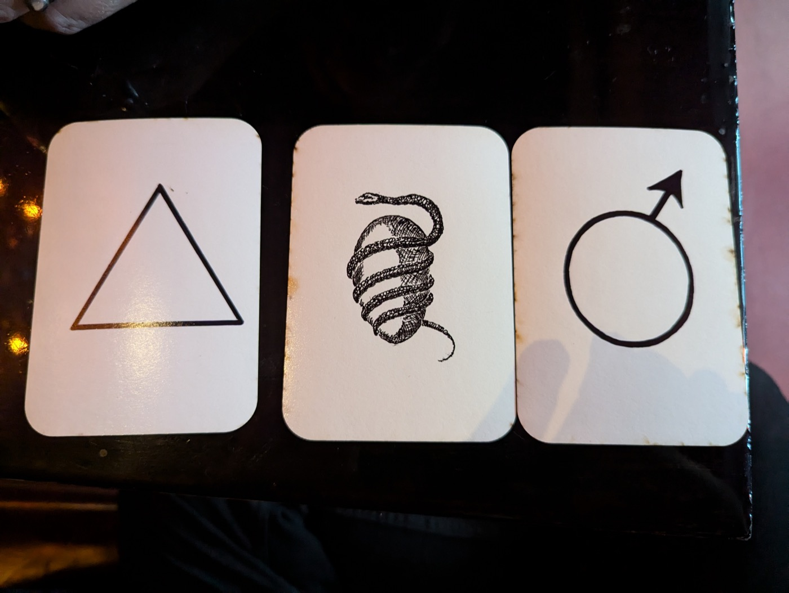
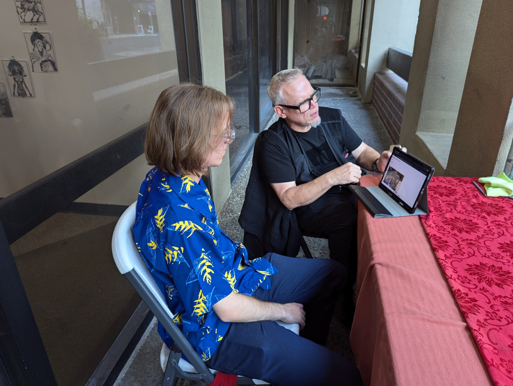
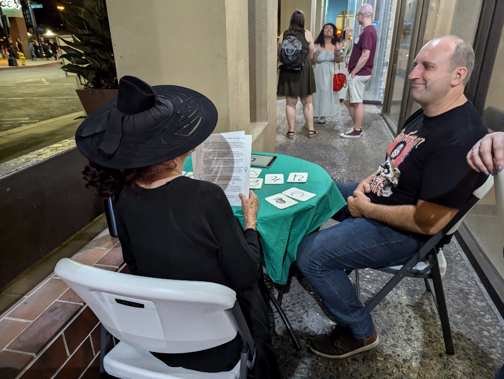
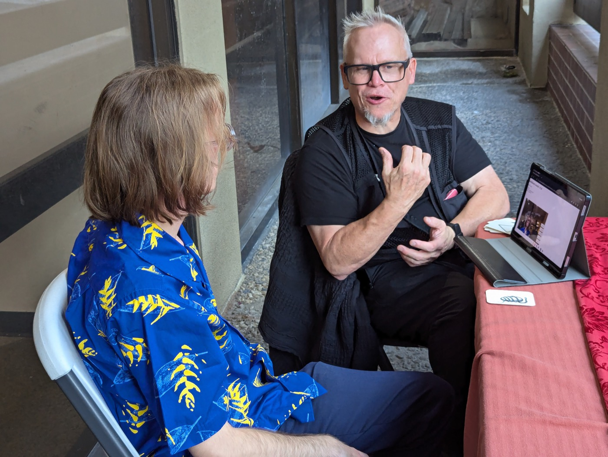
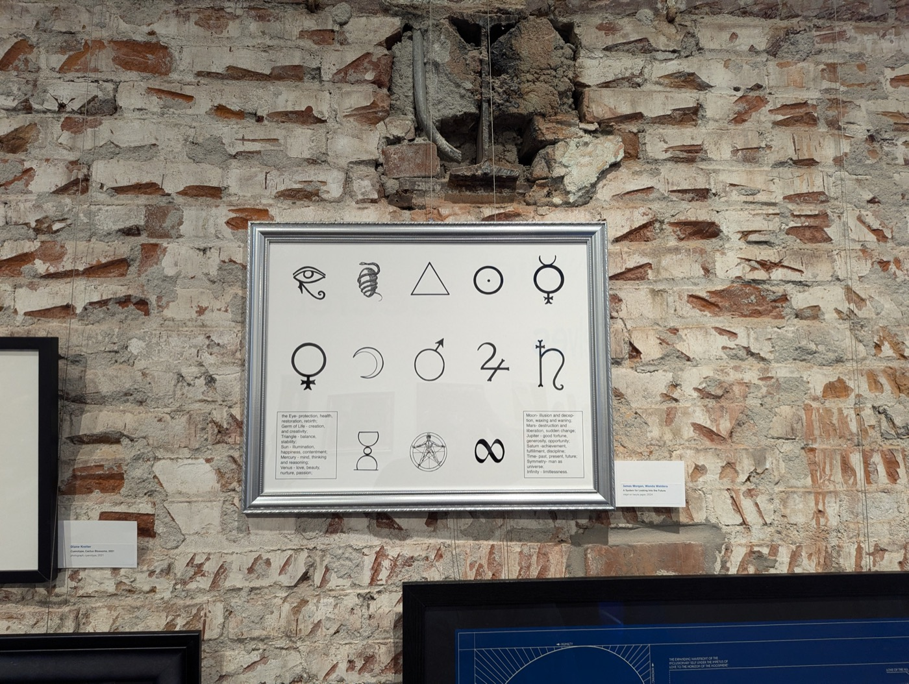

Oracle
A co-creative fortune-telling system using computer vision, a deck of thirteen symbols, and the oldest instrument of all: conversation.
Oracle Project
Oracle treats divination as a framework for making meaning together. A noisy image-classification model takes the place of a shuffled deck; a human reader interprets its partial signals with the person asking the question.
The project begins with a correspondence between fortune telling and generative systems. Both use procedures, hidden operations, patterns, and recombinations to make complex possibilities feel addressable. A shuffled card deck and a statistical model are not neutral windows onto the future; they are instruments that give uncertainty a form. Oracle adds a human mediator to that process, making interpretation a co-creative exchange between instrument, reader, and querent.
This is also a deliberate attempt to make machine intelligence strange again. Instead of optimizing a model toward a single useful answer, the project uses its uncertainty, cultural residue, and partial recognition to create an opening for thought. The result is less a prediction than a prompt: a way to place a new idea in the mind of the person asking.
Fortune telling as a co-creative model
The project began as a paper with Thomas Asmuth for the International Conference on Computational Creativity. It asks what happens when an AI system is placed inside the social, interpretive structure of a reading.
“Co-creativity arises as play within the triangular interaction of instrument, reader, and querent.”
Thirteen symbols
The physical deck is intentionally small. The computer vision model is trained and tested against the symbols, then uses what it sees in the surrounding environment to produce an uncertain sequence of cards.




A camera looking through a deck
The prototype uses MobileNet, a lightweight convolutional computer-vision model designed to run on small devices. A mobile camera scans the querent and the immediate environment, generating a stream of possible objects and forms. The system does not simply choose a random card. It compares what the model recognizes in the scene with what it recognizes when looking at the thirteen sigils, then uses those correlations to order the cards.
That process is intentionally indirect. The model is being used for something it was not designed to do: an inference-only “hijacking” that turns a catalogue of recognizable cultural objects into a divination instrument. Multiple frames, changing light, movement, and the model’s uncertainty produce a shifting field of possibilities. The environment becomes a source of associations, while the cards give those associations a symbolic vocabulary.
A quick reading may use the first three cards, creating 1,716 possible ordered combinations. A full thirteen-card reading produces more than six billion possible arrangements. The first cards can sit close to the question, while later cards establish distance and context. None of these arrangements contains a complete meaning on its own. Meaning emerges through the reader’s attention to the question, the position of the symbols, and the conversation that follows.
“The function of this oracle relies pretty heavily on the fact that there is a lot of noise in every reading.”
A reason to talk
At ICCC in Jönköping, Sweden, the system became a live performance: one visitor, one question, one reading at a time. The machine stayed hidden inside the exchange while the reader made space for hopes, dreams, and fears.




One question, one reading, one shared uncertainty
A performance begins by inviting one visitor to bring a question: a hope, fear, decision, relationship, or possible future. The setting is deliberately intimate. A small table, the physical deck, a camera, and a computer form a reading station where the visitor sits across from the reader.
As the visitor speaks, the camera observes both the person and the world around them. The computer-vision model searches for forms it can recognize, then filters those uncertain observations through the Oracle’s thirteen symbolic cards. Shifting frames and incomplete recognition become part of the reading rather than errors to be concealed.
The readingInterpretation as a live negotiation
The reader receives the sequence of symbols and interprets it aloud. The result is not a fixed answer waiting inside the machine. It is a narrative assembled between instrument, reader, and querent. The reader may describe a card, ask a follow-up question, or connect an image to something the visitor has already revealed.
The machine’s mechanics remain partly hidden inside the ritual. What the visitor encounters is not a software demonstration but a fortune-telling performance: a moment of attention in which technical signals, symbolic language, and social intuition meet.
What the Oracle makes possibleUnusually deep conversations with strangers
The most persistent discovery in the performances is social rather than predictive. A question about the future gives two people a reason to speak directly, without the ordinary small talk that usually organizes encounters at a conference or public event. Visitors have opened up about their hopes, dreams, fears, doubts, and private decisions within only a few minutes of meeting the reader.
The hidden AI changes the conditions of that conversation. It introduces an impersonal third presence—something that appears to notice the visitor without claiming to know them. The reader can then use the cards as a shared object, giving both people permission to interpret, disagree, and follow an unexpected association. The machine’s uncertainty becomes a social affordance: it keeps the exchange open long enough for the visitor to discover what they were actually trying to ask.
What the Oracle makes possibleA performance of uncertainty
The work’s drama comes from the tension between the appearance of prophecy and the system’s unmistakable uncertainty. The Oracle can suggest, echo, and provoke, but it cannot guarantee the future—especially when the question concerns events shaped by many people, such as an election.
In this sense, the performance is less a machine for knowing what will happen than a way to make uncertainty available for conversation. Its most important outcome may be the visitor’s opportunity to articulate hopes, dreams, and fears, and to see those thoughts returned through an unfamiliar symbolic system.
The system in the world
The cards also became a poster and an object for exhibition: a visible diagram of the hidden mechanics behind the reading.

The first documented exhibition presentation was A System for Looking into the Future, shown as part of Secret Public Selves at Works San José from July 27 through September 7, 2024. The deck gives the project a material and cultural presence: it can be handled, shuffled, displayed, and read apart from the software.
The project was also included in the CADRE 40 anniversary program at the San José Museum of Art on April 11, 2026, a public symposium of panels, demonstrations, and performance. CADRE 40 at SJMA ran from 11:00 AM to 4:30 PM.
After the prediction
The archive’s crisis of conscience began when a reading about the November 2024 election turned out to be inaccurate. What followed was not a simple rejection of the Oracle, but a closer examination of where its authority comes from—and what it can responsibly ask of a reader.
Before the conference, the project raised an uncomfortable question: without a finished instrument, could the fortune-teller perform without becoming “a bit of a fraud”?
The first documented public performance took place at the International Conference on Computational Creativity in Jönköping, Sweden: one visitor, one question, and one reading at a time.
A System for Looking into the Future was exhibited as part of Secret Public Selves at Works San José. The project moved from a conference demonstration into a gallery context.
Public readings were scheduled in the entryway of Kaleid from 6:00–9:00 PM. A related street-festival reading later that month asked about the impending election.
The Oracle was included in the Digital Media Art Faculty Exhibition at SJSU’s Natalie and James Thompson Art Gallery. A public reading was part of the August 26 opening program, which included artist presentations and a reception.
The writing names the central problem: a noisy system built from computer vision, shifting frames, and thirteen symbols can produce a compelling, cryptic reading—but not certainty. The question became: “What was the mistake?”
The Oracle was presented as part of CADRE’s 40th anniversary symposium at the San José Museum of Art, during the museum’s 11:00 AM–4:30 PM public program of panels, demonstrations, and performance.
The emerging resolution is that a personal reading cannot be expected to contain the actions of a whole electorate. The Oracle is therefore less a machine for knowing the future than a co-creative instrument for making uncertainty, desire, and conversation visible.
The project knows it is performing
Oracle is self-aware about the unstable line between art, ritual, hucksterism, and fraud. The reader’s social skills matter. The question must be framed carefully. A visitor asking for a definite yes or no may expose the limits of the instrument more quickly than a visitor willing to explore an open-ended question.
This self-awareness is not a weakness added after the fact; it is part of the work’s subject. The project uses the theatrical promise of fortune telling while making the mechanisms of that promise visible: the cards, the model, the reader’s interpretation, the visitor’s desires, and the cultural assumptions that make prediction feel persuasive.
Fortune telling, culture, and the question of whose knowledge counts
The project also asks why divination is so often dismissed as superstition, flimflam, or primitive belief while forecasting, financial prediction, psychological profiling, and algorithmic inference are granted institutional authority. Fortune telling blurs art, ritual, and community practice; it offers a different relationship to knowledge, one based on intuition, ambiguity, nonlinear time, and negotiated meaning.
Oracle does not claim that every divinatory system is factually accurate. Instead, it uses the cultural charge of fortune telling to question the boundaries between serious knowledge and discredited practice, objective technology and situated interpretation, sacred ritual and public performance. The deck becomes a way to hold those tensions in view while asking who has the power to decide what counts as a legitimate way of knowing.
“The Oracle is less a machine for knowing the future than a way to make uncertainty available for conversation.”
Back to Oracle